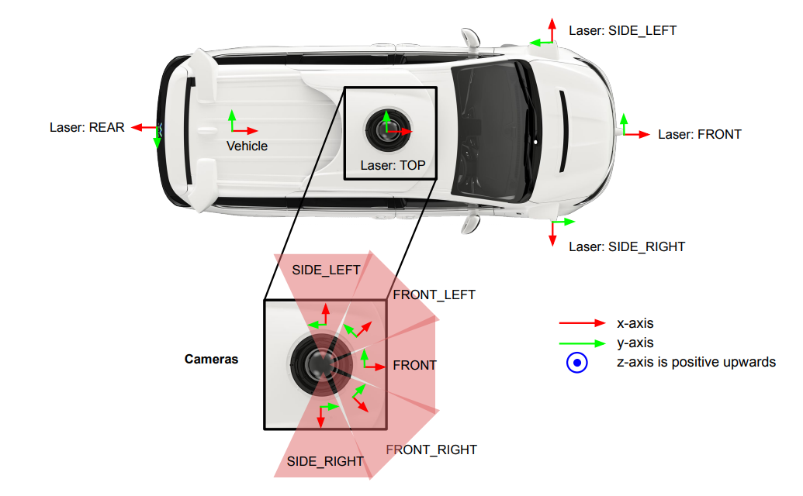

Comparative Analysis of Single-Camera and Multi-Camera SLAM
This experiment on the Waymo Open Dataset demonstrates the effectiveness of our Multi-Camera Gaussian Splatting SLAM system. We evaluate the 3D mapping performance using three individual cameras—Front, Front-Left, and Front-Right—and compare these single-camera reconstructions against the Multi-Camera SLAM results.
The comparison highlights that the Multi-Camera SLAM leverages complementary viewpoints, providing more complete and geometrically consistent 3D reconstructions. In contrast, single-camera setups are prone to occlusions and limited fields of view, resulting in incomplete or distorted geometry. Our approach effectively fuses information from all three perspectives, achieving superior scene coverage and depth accuracy.
Comparative Analysis of Single-Camera and Multi-Camera Mapping
In this section, we conduct a comparative analysis between single-camera SLAM and our Multi-Camera Gaussian Splatting SLAM system, further benchmarking against state-of-the-art methods, including MonoGS, Metric3Dv2, and HI-SLAM2.
The visual comparisons clearly demonstrate that our multi-camera approach significantly outperforms single-camera methods, providing more complete and consistent 3D scene reconstructions. Our system also achieves more scene details and ensures a richer 3D representation than HI-SLAM2, highlighting the benefits of leveraging multiple viewpoints through Gaussian Splatting and Multi-Camera system.